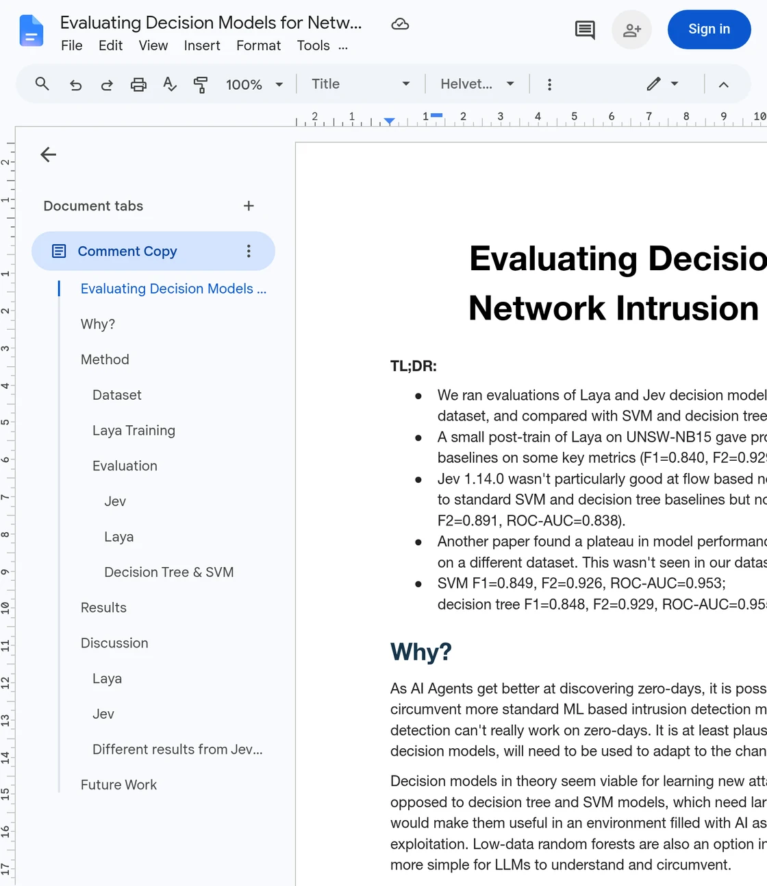
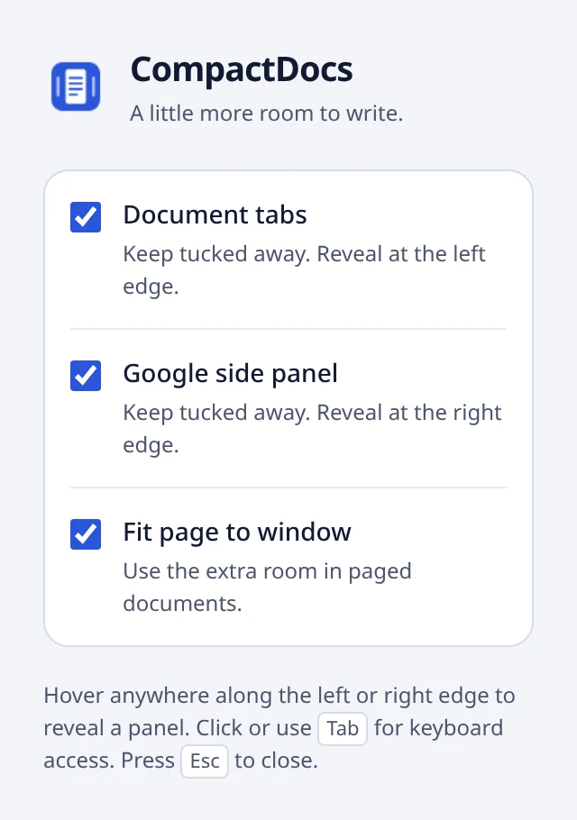

Google Docs, made for half a screen.
Keep a document open beside your research, notes or a call. CompactDocs tucks the side panels into the window’s edges and fits the page to the width you have.
Free on the Chrome Web Store, with automatic updates. Version 1.4.4.
Same window. More document.
In a narrow window, Docs keeps its tabs column open and pushes the page off to the side. CompactDocs gives that room back to the page and selects Docs’ own Fit zoom.

Panels wait at the edges.
Point anywhere along the left edge of the window for document tabs and the outline, or the right edge for the Google side panel. The targets are invisible and run the full height of the window, so there’s nothing to aim for.
A panel opens over the page, so your text doesn’t move, and closes when you move away. A short delay stops it opening when you’re just passing by.
From the keyboard, press Tab until an edge is focused and its panel opens. Press Esc to close it.
Three switches. That’s the whole setup.
Open CompactDocs from the Chrome toolbar to turn each one on or off. They’re all on to start, and they’re saved in your browser.
- Document tabs
- Keep the tabs column tucked away. Reveal it at the left edge.
- Google side panel
- Keep the side panel tucked away. Reveal it at the right edge.
- Fit page to window
- Use Docs’ Fit zoom for paged documents in narrow windows. Choosing a zoom percentage yourself pauses it. Pageless documents keep their own zoom.

Make room for your next document.
- Add CompactDocs from the Chrome Web Store.
- Reload any Google Docs documents you already have open.
- Snap Chrome to one side of your screen and start writing.
To install by hand, download the ZIP from GitHub releases and extract it. In chrome://extensions, turn on Developer mode, choose Load unpacked, and select the folder. Changes to the Docs interface, and Docs in languages other than English, can affect compatibility.